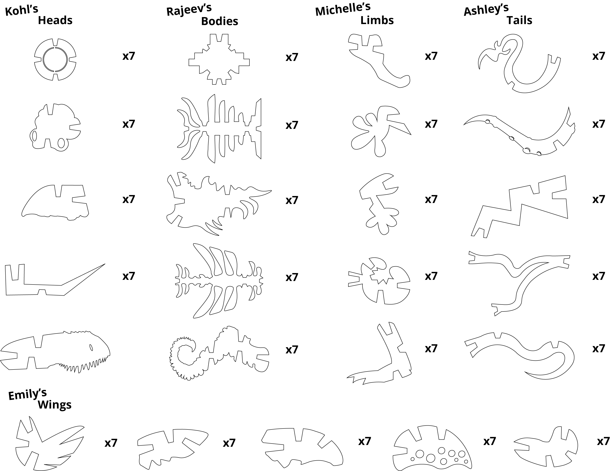

Modularity, Tesselation & Complexity
END - Final Designs & Design Schema | Back to Phase 01 | Back to Phase 02
Team Members
Ashley Rose, Kohl Meek, Rajeev Bhayro & Emily Fong
For our final approach, our team came up with the idea of "Franken-Monsters" which would work effectively with the idea of modularity. We referenced Legos, where its objective is to build objects in infinite ways. Each team member was assigned a body part to kick things off: heads, tails, limbs, bodies, and wings.
Franken-Monsters - Assigning Body Parts
- Heads - Kohl
- Bodies - Rajeev
- Limbs - Michelle
- Tails - Ashley
- Wings - Emily
We wanted to do a 3D style notched-based system using acrylic because we thought it would work best with our idea.
Our Designs

FINAL CUTS
Design Schema
Click here to see a larger version of our design schema.